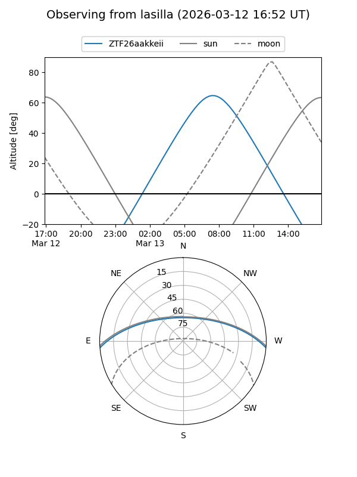
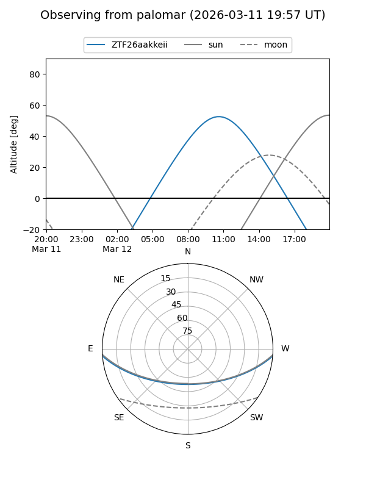

ZTF26aakkeii
Target ZTF26aakkeii at 2026-03-12 10:25
Aliases and brokers:
FINK: link
Lasair: link
ALeRCE: link
alt names
ZTF26aakkeii (ztf,fink_ztf)
Coordinates:
equatorial (ra, dec) = 211.9229,-3.90168
equatorial (HMS+DMS) = 14:07:41.50,-03:54:06.06
galactic (l, b) = (336.5276,+53.92063)
Flags:
Photometry:
last ztfg=19.95
1 ztfg detections
Lightcurve
Visibility


Additional plots